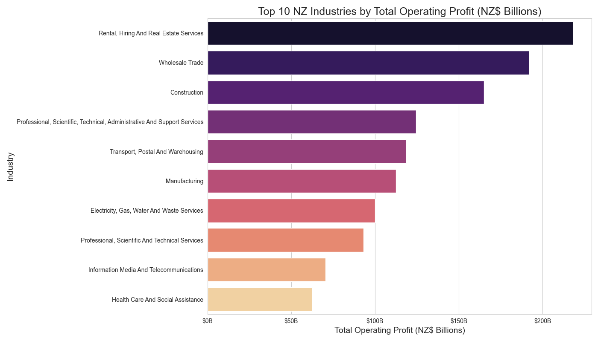
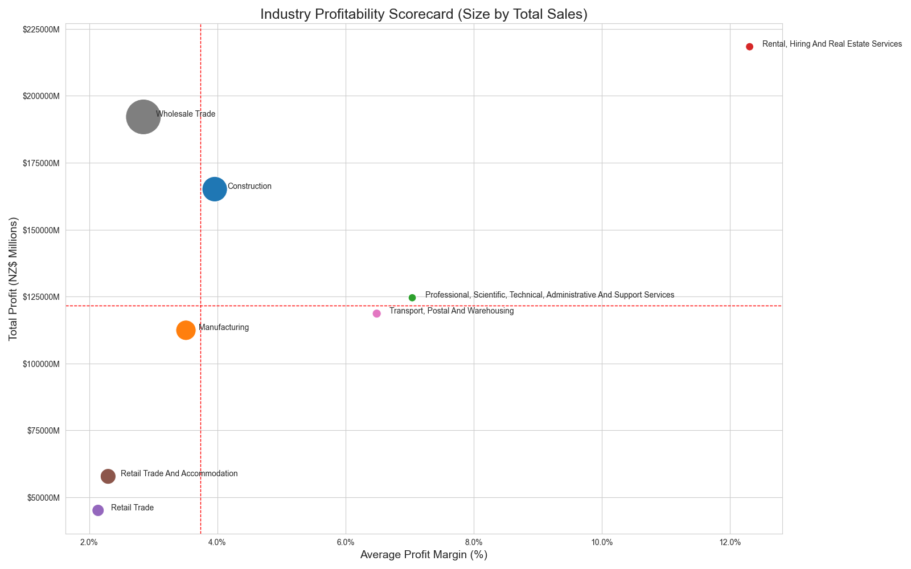
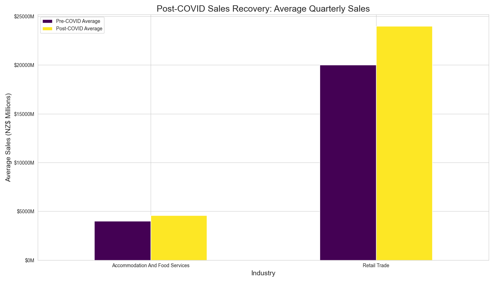

Python analysis
NZ Business Financials
Which New Zealand industries earn the most, on what margins, and how sales recovered after COVID.
- Python
- pandas
- matplotlib
- seaborn
- 4
- measures: sales, profit, assets, inventories
- Top 10
- industries by operating profit
- Pre / post
- COVID sales comparison

Problem
Which New Zealand industries earn the most, on what margins, and how did sales recover after COVID?
Data
Stats NZ quarterly business financial data: sales (operating income), operating profit, assets and inventories, broken down by industry.
What I built
A Python analysis in pandas, matplotlib and seaborn that cleans the quarterly series, builds subsets for sales, profit, assets and inventories, and charts:
- Top industries by sales and by operating profit
- A profitability scorecard: average margin against total profit, sized by sales
- Year-on-year sales growth and sector seasonality
- Average quarterly sales before and after COVID
Data flow
Long-format CSV to analysis-ready seriesDates are typed and numbers coerced safely before any subset is built.
What changed
What the analysis showsRental, Hiring and Real Estate Services earns the most operating profit, on the widest margin of any industry charted.
Wholesale Trade is second on profit but runs on one of the thinnest margins.
Retail Trade and Accommodation and Food Services both average higher quarterly sales after COVID than before it.
Gallery
Select an image to enlarge
